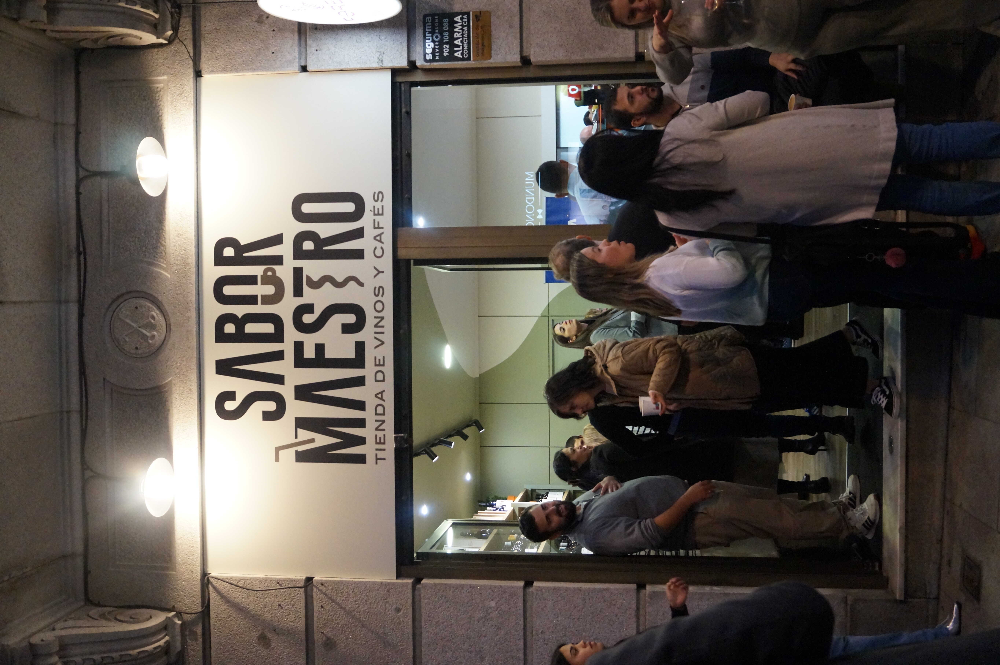

Nuestro Café,
Nuestra Pasión
En Sabor Maestro trabajamos con Forest Coffee, una microtostadora de especialidad donde el café se tuesta de forma artesanal para preservar cada matiz.
Sebarista y su equipo seleccionan cada producto gourmet: vinos singulares, chocolates premium y tés de origen para una experiencia auténtica.
Explora nuestra tienda


Rut Gonzalez
Local increíble para poder tomarse un buen café para llevar. Incluso puedes comprar el mismo café para hacértelo en casa que te lo muelen en el momento. Además de un excelente asesoramiento en materia de café o de vino, es un servicio maravilloso y los que te atienden son increíblemente amables y profesionales! Encantada con el servicio! Gracias!
Paola Bagliani
Lugar super ameno, de gran belleza estética y con unos productos exclusivos: delicatessen, café de especialidad, molido en el acto. Puedes escoger tu vino, guiado magistralmente por Sebastián, prestigioso sommelier y reconocido barista. Ideal para una copa o un café delicioso take away!!
Paco Miralles
El mejor lugar para llevarte un café de especialidad. Se ha convertido en mi tienda habitual
Alejandro Lara
Los mejores cafés y muy buena variedad de vinos, un servicio profesional y agradable, buen trato com el cliente y cercanía, recomiendo al 100%
Will Diaz
"Muy buen café natural, recomendado!se siente la diferencia en el tostado y el sabor"
Visítanos
🕒 Lun a Vie: 9:00-14:00 | 17:00-20:00
🕒 Sábados: 9:30-14:00 | 17:00-20:30
📍 Ubicación: Rúa do Marqués de Valladares, 3, Vigo
📞 Contacto: 677 262 540